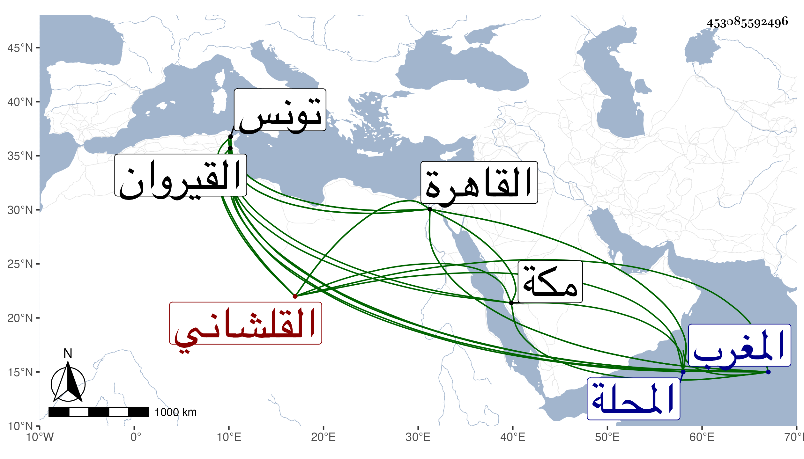

0902Sakhawi.DawLamic.ITO20230111-ara1.EIS1600.453085592496
Biography ID: 453085592496
القلشاني بكسر أوله أو فتحه وسكون ثانيه ثم معجمة معقودة بينها وبين الجيم وآخره نون قرية من نواحي تونس والقيروان بل هي إليها أقرب أحمد وعبد الله وعمر بنو محمد بن عبد الله بن محمد بن خلف الله بن عبد السلام بن أحمد الخزرجي وأولاد ثالثهم حسن وحسين ومحمد قاضي الجماعة فلحسن عبد اللطيف ولي قضاء المحلة بعد التريكي قبل استكمال الثلاثين ولحسين شمس الدين محمد لقيني بمكة في سنة أربع وتسعين وأخذ عني ثم بالقاهرة في التي تليها ولقاضي الجماعة عمر كان معه بالقاهرة واستجازني له ومولده سنة أربع وخمسين ولاه قضاء الجماعة يحيى بن محمد مسعود بن عثمان صاحب المغرب وحفيد صاحبه بعد صرفه لمحمد بن أبي القاسم القسنطيني .
